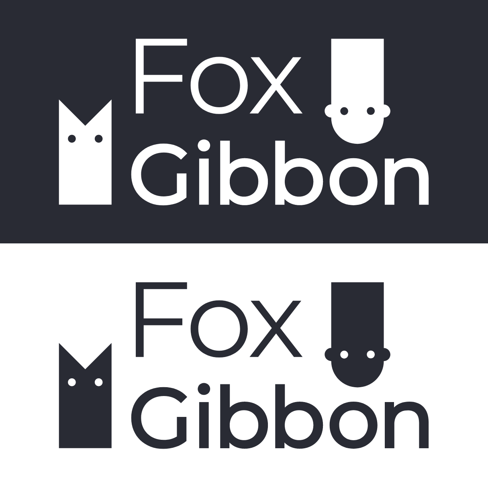
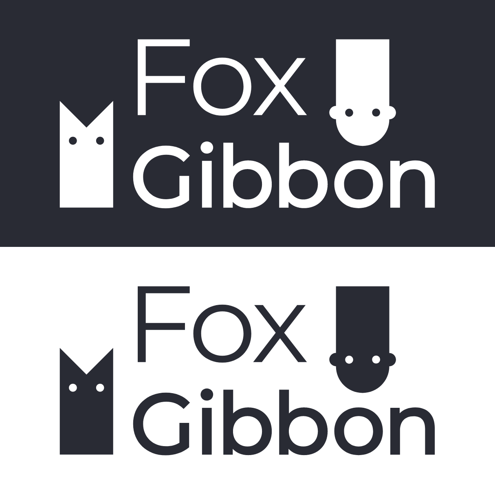

In the dynamic world of UX and UI design, staying updated with the latest trends, techniques, and best practices is crucial. Recognizing this need, I embarked on a creative journey and established FoxGibbon.com, a blog dedicated to sharing valuable UX and UI design tips and information. This article will delve into the process of creating the blog, which involved extensive research, prototyping, testing, leveraging analytics, and employing AI to enhance articles and receive valuable suggestions. Furthermore, I will outline how I crafted the logo and branding to establish a strong visual identity for FoxGIbbon.com.
Research: Laying the Foundation
The first step in creating FoxGibbon.com was to conduct research. This involved studying the latest industry trends, analyzing popular design blogs, and understanding the target audience's needs and preferences. By identifying knowledge gaps and areas where I could add value, I set the direction for my blog.
Logo and Branding: Establishing Visual Identity
 

Understanding the significance of visual identity in brand establishment, I undertook the task of designing a unique logo and branding. Through careful consideration of typography, color schemes, and graphic elements, I crafted a visually appealing logo that captured the essence of the blog's focus on UX and UI design. The branding was extended across various touchpoints, including the website, social media profiles, and promotional materials.
Prototyping: Designing the User Experience
With a clear vision in mind, I began prototyping the blog's user experience. I focused on creating an intuitive and visually appealing interface, ensuring easy navigation and seamless accessibility of content. Employing wireframing and rapid prototyping techniques, I iteratively refined the design to optimize user engagement.
Analytics and AI Integration: Enhancing Content and Engagement
To continuously improve the quality of articles and engage readers effectively, I integrated the use analytics and AI technologies. By analyzing user behavior, such as page views, time spent on articles, and click-through rates, I gained valuable insights into popular topics and reader preferences. Additionally, leveraging AI tools like ChatGPT, I enhanced articles by incorporating relevant suggestions and providing personalized recommendations to readers.
Outcome
Creating FoxGibbon.com was a rewarding journey, driven by a passion for UX and UI design. Through extensive research, prototyping, and testing, I crafted a user-centric blog that provides valuable insights to its readers. By integrating analytics and AI technologies, I continually enhance the quality of content and engage readers effectively. The logo and branding contribute to a strong visual identity, reinforcing the blog's credibility and attracting a loyal community of design enthusiasts. As FoxGIbbon.com continues to grow and evolve, it remains dedicated to sharing the latest UX and UI design trends and helping designers create exceptional user experiences. See the live website here.